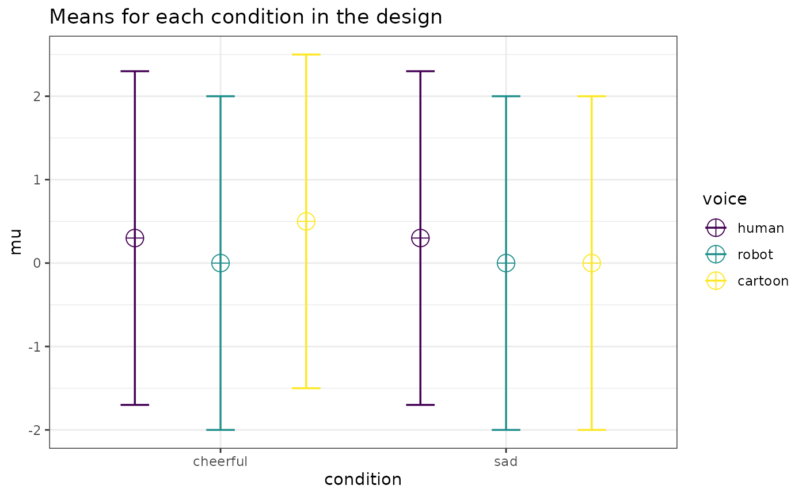

emmeans
analysesvignettes/emmeans_power.Rmd
emmeans_power.RmdWhen conducting exact ANOVA power analyses with
Superpower it is possible to calculate the power for both
the omnibus
-tests
and planned contrasts or post-hoc comparisons. It is possible to use
this approach to calculate power for standard contrasts, such as
pairwise contrasts between cells. Here I provide a brief overview of how
the output of ANOVA_exact() can be used to perform power
analyses for tailored planned contrasts and follow-up tests.
All power analyses for emmeans-objects are based on the
-
and
-values
from the analyses of the dataset simulated by ANOVA_exact()
assuming two-sided testing. Thus, the emmeans_power() does
not honor adjustments of the testing procedure due to either one-sided
testing (including two one-sided tests) or corrections for multiple
comparisons via the adjust option in emmeans.
As noted below, for the Bonferroni-adjustment this limitation can be
overcome by manually adjusting alpha_level.
First, we will set up a 2
3 repeated measures design. When calling ANOVA_exact()
pairwise comparisons of expected marginal means are added by setting
emm = TRUE and contrast_type = "pairwise"
(default).
# Set up a within design with 2 factors, each with 2 and 3 levels
design_result <- ANOVA_design(
design = "2w*3w",
n = 40,
mu = c(0.3, 0, 0.5, 0.3, 0, 0),
sd = 2,
r = 0.8,
label_list = list("condition" = c("cheerful", "sad"),
"voice" = c("human", "robot", "cartoon"))
)
exact_result <- ANOVA_exact(
design_result,
alpha_level = 0.05,
verbose = FALSE,
emm = TRUE,
contrast_type = "pairwise"
)The result contains the power calculations for both the omnibus -tests and pairwise post-hoc comparisons.
exact_result$main_results#> power partial_eta_squared cohen_f non_centrality
#> condition 29.08380 0.05070994 0.2311251 2.083333
#> voice 50.12584 0.06212425 0.2573700 5.166667
#> condition:voice 41.62968 0.05070994 0.2311251 4.166667
head(exact_result$emm_results)#> contrast power
#> 1 condition_cheerful voice_cartoon - condition_sad voice_cartoon 68.37160
#> 2 condition_cheerful voice_cartoon - condition_cheerful voice_human 16.41134
#> 3 condition_cheerful voice_cartoon - condition_sad voice_human 16.41134
#> 4 condition_cheerful voice_cartoon - condition_cheerful voice_robot 68.37160
#> 5 condition_cheerful voice_cartoon - condition_sad voice_robot 68.37160
#> 6 condition_sad voice_cartoon - condition_cheerful voice_human 30.99652
#> partial_eta_squared cohen_f non_centrality
#> 1 0.13812155 0.4003204 6.25
#> 2 0.02500000 0.1601282 1.00
#> 3 0.02500000 0.1601282 1.00
#> 4 0.13812155 0.4003204 6.25
#> 5 0.13812155 0.4003204 6.25
#> 6 0.05454545 0.2401922 2.25The output also contains the emmeans-object on which
these power calculations are based. By manipulating this object it is
possible to tailor the power analyses to the contrasts desired for the
planned study. That is, based on the dataset simulated with
ANOVA_exact() we can write out the analysis code for
emmeans-contrasts, just as we would if we were to analyze
the empirical data, and use the output to perform the corresponding
power analysis.
emmeans contrasts
The emmeans reference grid and contrasts are included in
the output of ANOVA_exact().
knitr::kable(exact_result$emmeans$emmeans)| condition | voice | emmean | SE | df | lower.CL | upper.CL |
|---|---|---|---|---|---|---|
| condition_cheerful | voice_cartoon | 0.5 | 0.3162278 | 39 | -0.139631 | 1.139631 |
| condition_sad | voice_cartoon | 0.0 | 0.3162278 | 39 | -0.639631 | 0.639631 |
| condition_cheerful | voice_human | 0.3 | 0.3162278 | 39 | -0.339631 | 0.939631 |
| condition_sad | voice_human | 0.3 | 0.3162278 | 39 | -0.339631 | 0.939631 |
| condition_cheerful | voice_robot | 0.0 | 0.3162278 | 39 | -0.639631 | 0.639631 |
| condition_sad | voice_robot | 0.0 | 0.3162278 | 39 | -0.639631 | 0.639631 |
knitr::kable(exact_result$emmeans$contrasts)| contrast | estimate | SE | df | t.ratio | p.value |
|---|---|---|---|---|---|
| condition_cheerful voice_cartoon - condition_sad voice_cartoon | 0.5 | 0.2 | 39 | 2.5 | 0.0167338 |
| condition_cheerful voice_cartoon - condition_cheerful voice_human | 0.2 | 0.2 | 39 | 1.0 | 0.3234749 |
| condition_cheerful voice_cartoon - condition_sad voice_human | 0.2 | 0.2 | 39 | 1.0 | 0.3234749 |
| condition_cheerful voice_cartoon - condition_cheerful voice_robot | 0.5 | 0.2 | 39 | 2.5 | 0.0167338 |
| condition_cheerful voice_cartoon - condition_sad voice_robot | 0.5 | 0.2 | 39 | 2.5 | 0.0167338 |
| condition_sad voice_cartoon - condition_cheerful voice_human | -0.3 | 0.2 | 39 | -1.5 | 0.1416670 |
| condition_sad voice_cartoon - condition_sad voice_human | -0.3 | 0.2 | 39 | -1.5 | 0.1416670 |
| condition_sad voice_cartoon - condition_cheerful voice_robot | 0.0 | 0.2 | 39 | 0.0 | 1.0000000 |
| condition_sad voice_cartoon - condition_sad voice_robot | 0.0 | 0.2 | 39 | 0.0 | 1.0000000 |
| condition_cheerful voice_human - condition_sad voice_human | 0.0 | 0.2 | 39 | 0.0 | 1.0000000 |
| condition_cheerful voice_human - condition_cheerful voice_robot | 0.3 | 0.2 | 39 | 1.5 | 0.1416670 |
| condition_cheerful voice_human - condition_sad voice_robot | 0.3 | 0.2 | 39 | 1.5 | 0.1416670 |
| condition_sad voice_human - condition_cheerful voice_robot | 0.3 | 0.2 | 39 | 1.5 | 0.1416670 |
| condition_sad voice_human - condition_sad voice_robot | 0.3 | 0.2 | 39 | 1.5 | 0.1416670 |
| condition_cheerful voice_robot - condition_sad voice_robot | 0.0 | 0.2 | 39 | 0.0 | 1.0000000 |
By using emmeans_power() on the contrasts, we can
reproduce the results of the previous power analysis for the pairwise
comparisons.
head(emmeans_power(exact_result$emmeans$contrasts))#> contrast power
#> 1 condition_cheerful voice_cartoon - condition_sad voice_cartoon 68.37160
#> 2 condition_cheerful voice_cartoon - condition_cheerful voice_human 16.41134
#> 3 condition_cheerful voice_cartoon - condition_sad voice_human 16.41134
#> 4 condition_cheerful voice_cartoon - condition_cheerful voice_robot 68.37160
#> 5 condition_cheerful voice_cartoon - condition_sad voice_robot 68.37160
#> 6 condition_sad voice_cartoon - condition_cheerful voice_human 30.99652
#> partial_eta_squared cohen_f non_centrality
#> 1 0.13812155 0.4003204 6.25
#> 2 0.02500000 0.1601282 1.00
#> 3 0.02500000 0.1601282 1.00
#> 4 0.13812155 0.4003204 6.25
#> 5 0.13812155 0.4003204 6.25
#> 6 0.05454545 0.2401922 2.25Now, we can manipulate the emmeans reference grid to
perform additional power analyses. In the following example, we
calculate the power for the contrasts between sad and cheerful condition
for each voice.
simple_condition_effects <- emmeans(
exact_result$emmeans$emmeans,
specs = ~ condition | voice
)
emmeans_power(pairs(simple_condition_effects))#> contrast voice power partial_eta_squared
#> 1 condition_cheerful - condition_sad voice_cartoon 68.3716 1.381215e-01
#> 2 condition_cheerful - condition_sad voice_human 5.0000 9.679033e-32
#> 3 condition_cheerful - condition_sad voice_robot 5.0000 1.593698e-35
#> cohen_f non_centrality
#> 1 4.003204e-01 6.250000e+00
#> 2 3.111114e-16 3.774823e-30
#> 3 3.992114e-18 6.215420e-34We may also calculate the power for testing all condition means against an arbitrary constant.
emmeans_power(test(simple_condition_effects, null = 0.5))#> condition voice power partial_eta_squared cohen_f
#> 1 condition_cheerful voice_cartoon 5.000000 0.00000000 0.0000000
#> 2 condition_sad voice_cartoon 33.831141 0.06024096 0.2531848
#> 3 condition_cheerful voice_human 9.462673 0.01015228 0.1012739
#> 4 condition_sad voice_human 9.462673 0.01015228 0.1012739
#> 5 condition_cheerful voice_robot 33.831141 0.06024096 0.2531848
#> 6 condition_sad voice_robot 33.831141 0.06024096 0.2531848
#> non_centrality
#> 1 0.0
#> 2 2.5
#> 3 0.4
#> 4 0.4
#> 5 2.5
#> 6 2.5Finally, we can calculate the power for custom contrasts between any linear combination of conditions.
custom_contrast <- contrast(
exact_result$emmeans$emmeans,
list(robot_vs_sad_human = c(0, 0, 0, 1, -0.5, -0.5))
)
emmeans_power(custom_contrast)#> contrast power partial_eta_squared cohen_f non_centrality
#> 1 robot_vs_sad_human 39.34971 0.07142857 0.2773501 3Although emmeans_power() currently ignores adjustments
for multiple comparisons, it is possible to calculate the power for
Bonferroni-corrected tests by adjusting alpha_level.
n_contrasts <- nrow(as.data.frame(simple_condition_effects))
emmeans_power(
pairs(simple_condition_effects),
alpha_level = 0.05 / n_contrasts
)#> contrast voice power
#> 1 condition_cheerful - condition_sad voice_cartoon 40.1555499
#> 2 condition_cheerful - condition_sad voice_human 0.8333333
#> 3 condition_cheerful - condition_sad voice_robot 0.8333333
#> partial_eta_squared cohen_f non_centrality
#> 1 1.381215e-01 4.003204e-01 6.250000e+00
#> 2 9.679033e-32 3.111114e-16 3.774823e-30
#> 3 1.593698e-35 3.992114e-18 6.215420e-34Similarly, if we want to calculate power for a one-sided test, we can
doubling alpha_level.
emmeans_power(
pairs(simple_condition_effects)[1],
alpha_level = 2 * 0.05
)#> contrast voice power partial_eta_squared
#> 1 condition_cheerful - condition_sad voice_cartoon 79.14507 0.1381215
#> cohen_f non_centrality
#> 1 0.4003204 6.25Note, that because power is calculated from the squared -value, power is only calculated correctly if the alternative hypothesis is true in the simulated dataset. That is, the difference of the condition means is consistent with the tested directional hypothesis.
Because emmeans can perform equivalence,
non-superiority, and -inferiority tests, emmeans_power()
can calculate the corresponding power for these tests.
emmeans_power(
pairs(simple_condition_effects, side = "equivalence", delta = 0.3)[2]
)#> contrast voice power partial_eta_squared
#> 2 condition_cheerful - condition_sad voice_human 30.99652 0.05454545
#> cohen_f non_centrality
#> 2 0.2401922 2.25Note, that because power is calculated from the squared
-value,
power is only calculated correctly if the alternative hypothesis is true
in the simulated dataset. That is, the difference between the condition
means is consistent with the tested directional hypothesis (smaller than
delta).
Another useful application of emmeans_power() is to
joint tests. Lets assume we plan to test the main effect of voice for
each of the two conditions separately using joint_tests().
We can then calculate the power for each Bonferroni-corrected
-test
as follows.
voice_by_condition <- joint_tests(
exact_result$emmeans$emmeans,
by = "condition"
)
emmeans_power(voice_by_condition, alpha_level = 0.05 / 2)#> model term condition power partial_eta_squared cohen_f
#> 1 voice condition_cheerful 21.80102 0.07510613 0.2849651
#> 3 voice condition_sad 10.39583 0.03703704 0.1961161
#> non_centrality
#> 1 3.167
#> 3 1.500